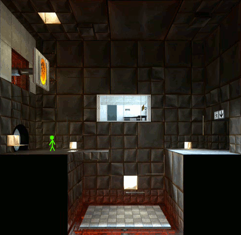

PUZZLE PATTERNS
Einführung von Spielern in Puzzle Mechaniken bei Spielen am Beispiel
Pascal Müller * Benjamin Assig * Matthias Ewald
DEFINITION PUZZLE
"A toy, problem, or other contrivance designed to amuse by presenting difficulties to be solved by ingenuity or patient effort."
"A puzzle is a game with a dominant strategy."
Ein Puzzle besteht aus einer mentalen Herausvorderung,
mit mindestens einer korrekten Lösung,
die der Spieler herausfinden muss.
PUZZLE TYPEN
Welche Typen kommen in Portal vor?
- Ursprünglich Studentenprojekt "Narbacular Drop" - übernommen von Valve
- Releasedate: Oktober 2007
- First Person Spiel in der Source Engine unterstützt durch Havoc Physics
- Spielziel: Erreichen des Ausgangs
-
Erreicht wird dies durch die Nutzung der Portalgun:
Schießen von Ein- und Ausgangsportal
sowie Schalter, Kisten, Emitter, Energiekugeln, Beschleunigung
- Unterstützt wird dies durch die Physik
Verschiedene Lernprozesse im Spiel
- Direkte Anweisungen
- Vormachen (Mimikry)
- Anleitungen, Visuelle Hilfestellungen
- Empirisches Vorgehen
Ziel ist es stets den Spieler nicht zu überfordern.
Dies wird durch sog. "part-task"-Training¹ erreicht.
> Eine Teilmechanik des Spiels wird eingeführt.
¹ "What’s the Best Way to Introduce Players to Controls, Mechanics, and Interface? - Richard Wainess 2009"
Lernprozesse anhand der Levels dargestellt
Einführung der Portal-Mechanik
-
Puzzle Principle #1:
Make the Goal Easily Understood
-
Puzzle Principle #2:
Make it easy to get started
Einführung der Schalter-Mechanik
- Starke visuelle Leitung des Spielers
- Reduzierung auf simpelste Mechanik
- Ausgang als klares Ziel erkennbar
Einführung der Schalter + Kisten + Portale
- Kombination der beiden vorherigen Mechaniken
- Dient dem besseren Verständnis der Portale
- Bei Lösung hat der Spieler min. 5 Portale durchschritten
Einführung der Portal-Gun
- Zeitgesteuerte Tür
- Pregnante Präsentation der Gun
- Selbstständiges Öffnen der Portale
- Audiofeedback
Verständnis Ein- / Ausgang
- Unterschiedliche Farbe der Portale hat keine Aussage darüber ob Ein- oder Ausgang
- Spieler wird gezwungen, beide farbigen Portale als Ein- und Ausgang zu nutzen
- Wird einzig durch das Leveldesign transportiert (empirische Erfahrung)
Einführung von Momentum

- Spieler wird gezwungen, beide farbigen Portale als Ein- und Ausgang zu nutzen
- Wird einzig durch das Leveldesign transportiert (empirische Erfahrung)
Portal Speedrun
Perfektes Spielverständnis und Ausnutzung der Mechaniken
Zielsetzung für das finale Paper
- Portal und Portal 2 als Beispiel für gelungenes Design von Puzzles
- Welche Designentscheidungen helfen, um dem Spieler neue Mechaniken näher zu bringen?
- Welche Arten der Lernprozesse unterstützen das Verständnis am besten?
- Erstellung eines Leitfadens für die Heranführung von Spieler an Puzzle Patterns
- Evtl. Usertests (A/B, Monitoring) für die Erhebung von signifikaten Daten
Vielen Dank für die Aufmerksamkeit!
- Mögliche Negativbeispiele für schlechtes Puzzledesign?
- 5x5 Games, eigene Erfahrung
- Unterforderung des Spielers? Mehr Komplexität?
- Visuelles Design auch ohne starke Reduzierung möglich (Bsp. Portal2)?
- Persönliche Präferenz: Tutorial, Dummy Level, Empirisch usw.